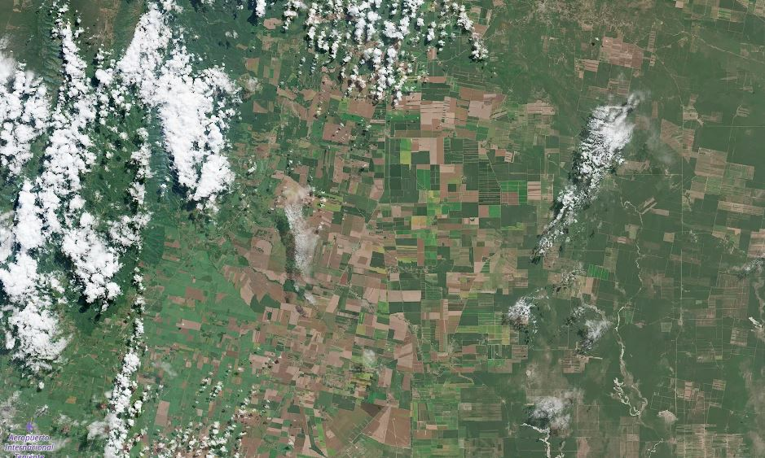

📖 Historia arrastrá para mover
◀ menos · más ▶
Cada campaña deja su huella en la tierra: mirá cómo cultivos y monte cambian de color año tras año, de 2018 a 2026.
Hacé click en Burruyacú para explorar
Cargá tus archivos GeoTIFF (mismo ROI). Todo se procesa en tu navegador, no se sube a ningún servidor.
🕐 Comparación con un año histórico (opcional)

Los mapas de cada año se obtienen clasificando imágenes satelitales del territorio: son las imágenes que usamos como base de todo lo que ves acá.
Si aparecen huecos sin clasificar es porque había nubes cuando el satélite pasó: tapan el suelo y no se puede identificar el cultivo. También pueden ser rutas, ciudades o ríos.